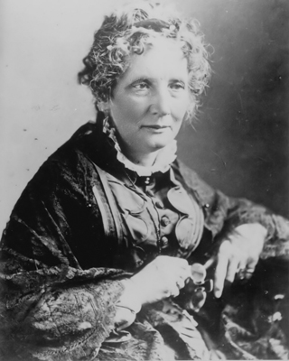

“Kalemle, kılıcın yaptıklarından daha fazlasını yapabilirsiniz”
Harriet Beecher Stowe
ABD Başkanı Abraham Lincoln, kendisiyle karşılaştığında ona “Demek bu büyük savaşı başlatan kitabı yazan küçük kadın sizsiniz” demişti. Başkan’ın göndermede bulunduğu bu kitabın adı ‘Uncle Tom’s Cabin’di (Tom Amca’nın Kulübesi) ve Amerika’daki kölelik uygulamasına duyulan öfkeyi anlatıyor, bu sistemin hem beyazlar hem de siyahlar üzerindeki yıkıcı etkilerinden bahsediyordu.
Lincoln’ün ‘küçük kadın’ diye hitap ettiği bu kişi, Harriet Beecher Stowe’du. Dünya genelinde 3 milyondan fazla satan eseri, hemen hemen aynı sayıda tiyatro oyununa ve gösteriye konu olmuş, etkisini İngiltere’de bile hissettirmişti. Kölelikle ilgili eserleri Kuzey Amerika’da kölelik karşıtlarını harekete geçirmiş, köleliği savunan Amerika’nın Güney eyaletlerindeyse tepkiyle karşılanmıştı. Nihayetinde Amerika’nın Kuzey ve Güney eyaletleri arasında yaşanan iç savaşın ardından kölelik kaldırıldı. Yazdığı bu eserle, Amerika’da köleliğin kaldırılmasında etkili bir rol oynayan ve dünya genelinde kölelik sisteminin gündeme gelmesini sağlayan Harriet, tarihi değiştiren kadınlar arasına girmeyi en çok hak eden isimlerden biriydi.
Dindar ailenin dindar kızı
Harriet Beecher Stowe, 14 Haziran 1811’de Amerika’nın Connecticut eyaletindeki Litchfield kasabasında dindar bir ailenin çocuğu olarak dünyaya gözlerini açtı. Harriet, eyalet kongresinin üyesi Lyman Beecher ile eşi Roxana Foote Beecher’in yedinci çocuğu ve dördüncü kızıydı. Babası Lyman Beecher ünlü ve etkili bir vaiz, teolog ve Amerikan İncil Topluluğu’nun (American Bible Society) kurucusuydu. Kölelik karşıtı faaliyetlerde de aktif rol oynuyordu. Annesi de oldukça inançlı bir kadındı. Tanrı’dan, çocuklarının kalbine insanlara hizmet duygusunu yerleştirmesini istiyordu. Bu duası kabul edilecek, Beecher ailesinin bütün çocukları, hayatlarını Hristiyan inancının yayılmasına adayacaklardı.
Sıradan bir çocukluk süren Herriet’in yaşamındaki ilk değişiklik, 4 yaşında annesini kaybetmesi oldu. Bu tarihten sonra çocukların yetiştirilmesi konusunda babanın ağırlığı kendisini hissettirdi. Her ne kadar ailenin hem maddi olarak desteklenmesini hem de duygusal olarak ayakta kalmasını sağlamak zor olsa da baba Lyman bunu başardı.
Harriet’in kendi ifadesine göre babası, evlerini bir “moral cennetine” çevirmişti. Lyman Beecher, eşinin ölümünden birkaç yıl sonra yeniden evlendi; ancak Roxana’nın çocukları hiçbir zaman üvey annelerinin denetimine girmedi. Duygusal olarak ve eğitimleri konusunda babalarına bağlılıkları devam etti.
Harriet iyi bir eğitim aldı. Sekiz yaşındayken Litchfield’deki ünlü Miss Sarah Pierce Okulu’na yazıldı. On üç yaşına kadar eğitimini burada sürdürdü ve daha sonra kardeşi Catherine tarafından açılan Hartford Kız Akademisi’ne katılmak üzere evden ayrıldı. Burada Latince, İtalyanca ve Fransızca öğrendi. Biraz utangaç ve içine kapanıktı; ama yazmayı ve okumayı seviyordu.
On üç yaşında tatil için eve geldiği bir gün, babasının yaptığı dini bir sohbetin ardından hayatını Hz. İsa’ya adamaya karar verdi. Bu karar, Harriet’in hayatının geri kalanı şekillendirecekti.
Yazarlık, evlilik ve bir kez daha yazarlık
1833 Ağustos’unda ‘Western Monthly Magazine’ adlı bir dergide bir öykü yarışmasının ilanını gördü. Yazar olmayı hayal eden Harriet, kısa bir öyküsünü yarışmaya yolladı ve birinci oldu. Öyküsü 1834 Nisan’ında basıldı. Aslında Harriet, bu başarıdan sonra yüreklenip, yeteneğine güvenerek yazmayı meslek haline dönüştürebilirdi. Ancak 1836 Ocak’ında 25 yaşındayken, kendisinden 9 yaş büyük, kölelik karşıtı bir profesör ve aynı zamanda rahip olan Calvin Stowe ile evlendi. Yazarlık kariyeri biraz bekleyecekti. Yedi çocukları oldu. Harriet en büyük önceliği, çocuklarını sevgiyle büyüttüğü bir yuva kurmaya vermişti. Çocuk büyütmeyi kutsal bir fedakârlık ve Tanrı’ya hizmet olarak görüyordu.
Calvin ve Harriet’in mutlu bir evlikleri vardı; zor zamanlarında birbirlerine destek olmayı bilmişlerdi. Hayatları boyunca birçok zorlukla karşılaştılar; çocuklarından birini daha küçükken kaybettiler. Maddi krizler de cabasıydı. Her şeye karşın, birbirlerine olan saygılarını daima korudular. Öyle ki Harriet, kocası için “Eğer sen benim çok sevdiğim kocam olmasaydın, sana kesinlikle âşık olurdum!” diyordu. Ancak Calvin evi geçindirmekte zorlanmaya başlamıştı. Bu yüzden Harriet, aileye maddi destek sağlamak için dini dergilere ve gazetelere, ev hayatıyla ilgili hikâyeler yazmaya başladı. Yazmaktan kazandığı parayla, ev işleri ve çocuklarını büyütme görevini paylaşabileceği yardımcılar tuttu. Bu esnada Calvin, eşinin yazarlık gayretini teşvik ediyor, Amerika ve İngiltere’de Harriet’in edebiyat ajansı gibi çalışıyordu. Ohio’da yaşadıkları sırada evleri, kaçak kölelerin Kanada’ya giderken uğradıkları birçok ‘istasyon’dan biriydi.
Amerika’yı sarsan kitap...
1850’de nüfusu 23 milyon olan Amerika’da 3.2 milyon zenci köle bulunuyordu. Kölelik, Amerikan tarihinin en netameli ve tartışmalı konulardan biriydi. 1840’lı yıllardan itibaren köleliğin kaldırılmasını savunan hareket genişlemiş ve aralarında gazete editörleri, öğretmenler, papazlar ve yazarların bulunduğu pek çok kesim köleliğin kaldırılmasına destek vermeye başlamıştı. Bu insanlara göre hiçbir şey köleliği haklı kılamazdı. İşte bu ortamda Harriet, ünlü eseri ‘Tom Amca’nın Kulübesi’ni yazdı. Bu kitap Amerika’yı sarsacaktı...
Harriet, kitabında beyaz efendilerin kölelerine iyi ve hoşgörülü davrandığı şeklindeki efsaneyi paramparça ediyordu. Ona göre her ‘iyi kalpli’ köle sahibi, paraya ihtiyacı olduğunda kölelerini satıyor ve onları ailelerinden ayırıyordu. Kölelik siteminin merkezi konumunda olan Ohio’da ve komşu eyalet Kentucky’de yaşadığı için, kölelik sistemini çok yakından görme imkânı bulmuş olan Harriet, kitabında kendi deneyimlerini de dile getirmişti.
Harriet’in hayatındaki önemli dönüm noktalarından biri de 1850’de yaşandı. O yıl Amerika’da, kaçan köleleri gittikleri yerlere kadar izleyip geri getirme hakkı ile Güneylileri imtiyazlı kılan; Kuzeylileri ise, kaçmış köleleri eski sahiplerine geri yollamakla yükümlü hale getiren ve aksi takdirde cezalandırılmalarını öngören Kaçak Köle Yasası yürürlüğe girmişti. Bu yasa, kölelik karşıtlarının bardağını taşıran son damla idi.
Bütün bunlar üzerine Harriet’in kalemine sarılmasında erkek kardeşinin eşinin kendisine yazdığı mektup çok etkili olmuştu. Kardeşinin eşi kendisine “Kalemimi senin gibi kullanabilseydim, köleliğin ne denli utanç verici bir şey olduğunu tüm ulusun anlayabilmesi için bir şeyler yazardım” diye sesleniyordu. Bu çağrı karşılıksız kalmayacaktı. Harriet, en güçlü silahını, kalemini kullanmaya karar verdi.
Kölelik sisteminin yüzünde, bir tokat gibi patlayacak eserini yazmaya başladığında, en küçük çocuğu Charles Edward, henüz süt emiyor ve geceleri yanında yatıyordu. Bu yüzden gündelik ev işlerini yaparken kurguladığı eserini, geceleri yazıya aktarıyordu. Harriet, 25 yıl sonra en küçük oğluna yazdığı bir mektupta söz konusu eseri yazma sürecinden şu şekilde bahsediyordu: “Halkımız tarafından kölelere reva görülen haksızlık ve vahşet karşısında üzüntüden neredeyse kalbim parçalanıyordu. Bazı geceler sen yanımda uyurken çocukları ellerinden alınan zavallı köle anneleri düşündüğümde ateş gibi yaşlar akardı gözümden.”
1851 ilkbaharında öyküsünün ilk bölümünü bitirmiş ve Washington’da yayınlanan, dönemin kölelik karşıtı gazetelerinden National Era’ya yollamıştı. Öyküsü üç ay boyunca tefrika edilecekti. Harriet, romanı kitap olarak piyasaya çıksa bile, bunun kendisine ün ve para kazandıracağına inanmıyordu. Zaten Boston’daki büyük bir yayınevi de Güney’deki satışlarını düşürebileceği korkusuyla Harriet’in kitap taslağını geri çevirmişti. Dergide dizi olarak yayınlanmasıyla yetinecekti ki, en sonunda böyle bir riske girebilecek genç bir yayıncı buldu. Ancak ‘köleliğe karşı savaş’, kölelikten nefret eden Kuzey’de bile pek tutulan bir konu değildi. Tüm bunlara karşın Tom Amca’nın Kulübesi, 1852’de raflardaki yerini aldı. Ve...
Kısa zamanda 3 milyon sattı
Kitap piyasaya çıktığının ilk gününde 3 bin adet sattı. Tiraj birinci yılın sonunda 300 bine; ve devamında dünya genelinde 3 milyona ulaştı. Kitap, Kuzey’de hayranlık uyandırırken, Güney’de öfkeye yol açmıştı. 1853 yılı Ocak ayında Tom Amca’nın Kulübesi Amerika’da 200 bin baskıya ulaşmış, Almanca ve Fransızcaya çevrilmişti. 1854’e gelindiğinde eser 60 dile çevrilmiş; ‘kölelik’, yalnız Amerika’nın değil, artık tüm dünyanın en güncel meselelerinden biri haline gelmişti.
Harriet, Tom Amca’nın Kulübesi’ni, Kaçak Köle Yasası çıktıktan sonra yazmıştı ve kitap, Amerikan edebiyat tarihinde, kahramanı zenci olan ilk eserdi! Harriet, kitabında köleliliği yerden yere vururken, kölelikten yararlanan veya ona müsamaha gösteren beyazların, zamanla ahlaki değerlerini nasıl yitirdiklerini gösteriyordu. Köleliğe bağlılıklarını sona erdirmek için, beyaz Amerikalı dostlarının (özellikle de Kuzeylilerin) vicdanlarına sesleniyor; kaçan köleleri iade etmemeleri ve onlara saygılı davranmaları çağrısında bulunuyordu.
Kitabın yayınlanmasıyla birlikte, kölelik taraftarları da karşı saldırıya geçti. Kitapta anlatılanların hayal ürünü olduğunu öne sürüyorlardı. Bu saçmalıklar, Harriet’ı çok sinirlendirmişti, iddialarını ispatlamak için Tom Amca’nın Kulübesi’nin Anahtarı isimli başka bir kitap daha yazdı. Kitabını oluştururken temel aldığı gerçek olayları ve belgeleri ortaya koydu. Derlediği birçok belgenin arasında, kölelik yanlısı Güney gazetelerinden Nashville Gazette’nin 22 Ekim 1852 tarihli nüshasında çıkan şu ilan da vardı: “Satılık: 10 yaşından 18’ine kadar iyi gelişmiş kızlar, 24 yaşında bir kadın ve çok şirin 3 çocuklu, 25 yaşında, çok işe yarar bir kadın. Müracaat: Williams Glower.”
Harriet, Tom Amca’nın Kulübesi’nden sonra, 1856’da kölelik karşıtı ikinci önemli eseri Dred’i yazdı ve kısa sürede Amerika’nın en çok kazanan ve en ünlü yazarlarından biri oldu. Yıkılmaz denilen kölelik sisteminin surlarında kalemiyle devasa bir gedik açmış, milyonların zihnine “Kölelik insan onuruna aykırı bir şeydir ve ortadan kaldırılmalıdır” düşüncesini yerleştirmişti. Bu asil ve cesur çabası karşılıksız kalmayacaktı.
‘Tom Amca’ kölelik sisteminin temellerini sarstı
Amerika’da 1854’te köleliğe karşı hareketin temelleri atıldı ve Cumhuriyetçi Parti kuruldu. 1860’ta, kölelik karşıtı Cumhuriyetçi Başkan Abraham Lincoln döneminde çıkan iç savaş, Kuzey eyaletlerinin zaferi ile sonuçlandı ve kölelik resmen kaldırıldı.
Harriet, savaştan sonra Lincoln ile bir araya gelmişti. Başkan, bu kalem savaşçısını, “Demek o büyük savaşı başlatan kitabı yazan küçük kadın sizsiniz” diyerek selamlayacaktı.
İç savaşın bitiminden sonra Stowe ailesi, Florida’ya taşındı. Harriet burada kadınların oy verme hakkını savunanlar arasına katıldı ve ‘Heart and Home’ adlı dergide tüm mesleklerin kadınlara açılmasını isteyen başyazılar yazdı. Kadınların “Tanrı’nın ve doğanın onlara verdiği her türlü yetenekten faydalanması gerektiğine” inanıyordu.

Harriet B. Stowe, tarihi değiştirmek için en güçlü silahını, kalemini kullandı.
Harriet, Florida’da fazla kalmadı ve hayatının geri kalanını geçirmek üzere Connecticut Hartford’a geri döndü. Burada kadınları ön plana çıkardığı ‘Kutsal Tarihte Kadın’ (Woman in Sacred History) adlı eserini yazdı. 1896’da 85 yaşında öldü ve Massachusetts eyaletinin Andover kentindeki Phillips Akademisi’nin bahçesine gömüldü. Örnek bir hayat sürmüş, tarihe geçen özdeyişinde de belirttiği gibi, kalemiyle, birçoklarının kılıçla yaptıklarından daha fazlasını yapmıştı...
NOTLAR